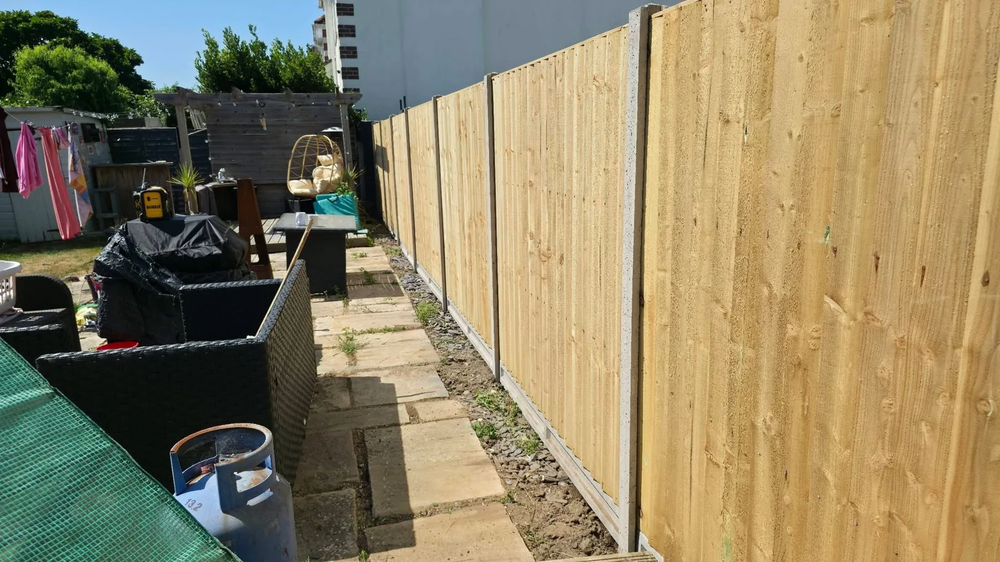

Timber fencing
From garden panels to longer boundary runs, the portfolio shows timber fencing in a range of settings. Share your preferred height, approximate length and photographs to discuss the project.
Get a quotePROJECT PHOTOS
A closer look.
Tap a photograph to view the complete image.
THE FENCE GUYS · POOLE
Ready for a new boundary?
Call us or send a few photos on WhatsApp.